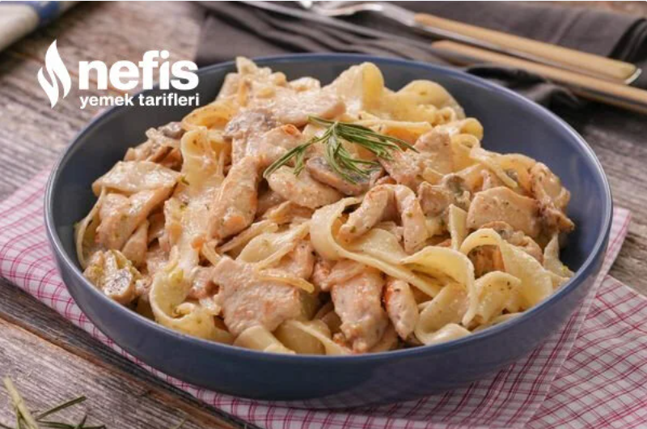

Kremalı Tavuklu Makarna
Evde kremalı tavuklu mantarlı makarnayı hazırlamak aslında çok kolay. Akşama yemek olmayınca benim sıklıkla yaptığım tariflerden biri. Malzemeler ve yapılış kabaca bu şekilde, siz tabi kendi damak zevkinize göre istediğiniz ekleme ve çıkarmayı yapabilirsiniz, şimdiden afiyet olsun :)
- 1 kase mantar (konserve veya taze)
- 500 gr tavuk göğüs eti
- 1 adet kuru soğan
- 2-3 yemek kaşığı zeytinyağı
- 200 gr makarna (ben fettucine kullandım, farklı çeşit de olur)
- 200 ml sıvı krema
- 1 yemek kaşığı toz parmesan peyniri (tercihe bağlı)
- Yarım çay kaşığı karabiber
- 1 tatlı kaşığı kekik
- 1 çay kaşığı tuz
Nasıl Yapılır?
- Öncelikle tavuk göğsünü julyen şeklinde doğrayalım. Dilerseniz küp küp de doğrayabilirsiniz, nasıl tercih ederseniz.
- Soğanı da piyazlık olacak şekilde doğrayalım. Son olarak mantarlarımızı da doğrayalım.
- Tencereye bol su alarak kaynamaya bırakalım. Kaynadıktan sonra içerisine tuzu ekleyelim.
- Makarnalarımızı da ilave ederek haşlanmaya bırakalım.
- Uygun bir tavaya zeytinyağını alalım. Üzerine doğradığımız tavukları ekleyerek sotelemeye başlayalım. Mümkün olduğunca yüksek ateşte sürekli tavukları karıştırarak hızlı bir şekilde soteleyelim. Böylelikle tavuklar suyunu kaybetmeden pişecektir.
- Tavukların rengi dönüp kızarmaya başladıklarında doğradığımız soğan ve mantarları da ilave edelim, karıştırarak kavurmaya devam edelim.
- Malzemeler güzelce kavrulduğunda sıvı kremayı ekleyerek karıştıralım.
- Daha sonra karabiber, kekik, tuz ve parmesan peynirini ekleyelim. Tüm malzemeleri tekrardan karıştıralım.
- 1-2 dakika kadar kısık ateşte pişirdikten sonra ocağı kapatalım.
- Haşlanmış makarnaları ilave ederek nazikçe karıştıralım.
- Makarnalarımızı sıcağıyla servis tabağına aldıktan sonra servis edebilirsiniz. Afiyet olsun!